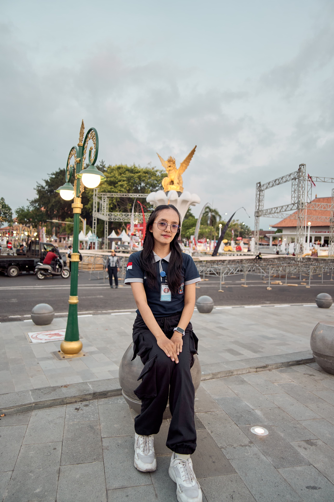

Portofolio digital ini menyajikan rancangan perencanaan pembelajaran terbaik dan rekaman video pelaksanaan praktik mengajar mandiri secara akuntabel, terstruktur, serta dilengkapi analisis mendalam.

Kredibilitas Sumber Informasi & Media Pers Digital
Fokus pembelajaran ini bertujuan melatih peserta didik untuk berpikir kritis dalam mengevaluasi keabsahan berita, membedakan fakta dan opini, serta memahami etika konsumsi media pers di era digital.
Dokumen Perencanaan Pembelajaran dan Video Praktik Mengajar
Modul Ajar / RPP Lengkap Siklus 1
Rekaman Praktik Pembelajaran Mandiri
Refleksi Kritis dan Evaluasi Komprehensif Siklus 1
Penyusunan modul ajar materi "Kredibilitas Sumber Informasi" mengintegrasikan model Project-Based Learning (PjBL). Desain alur pembelajaran terbukti efektif mendorong peserta didik untuk secara aktif menelaah langsung berita palsu (hoax) vs pers digital kredibel, dan menyusun kembali berita yang didapatkan dalam bentuk koran digital
Pelaksanaan praktik berjalan sesuai sintaks PjBL. Pengelolaan kelas dan keterlibatan peserta didik mencapai tingkat responsif tinggi saat sesi diskusi kelompok mengevaluasi artikel berita digital secara aktual.
Asesmen diagnostik, formatif (rubrik diskusi). Hasil asesmen menunjukkan peningkatan signifikan pada kemampuan literasi kritis peserta didik dalam membedakan media pers resmi dan blog tidak terverifikasi.
Ditemukan tantangan minor pada alokasi waktu sesi presentasi. Tindak lanjut untuk siklus berikutnya adalah menyederhanakan lembar kerja murid agar proses verifikasi fakta dapat diselesaikan lebih sistematis.